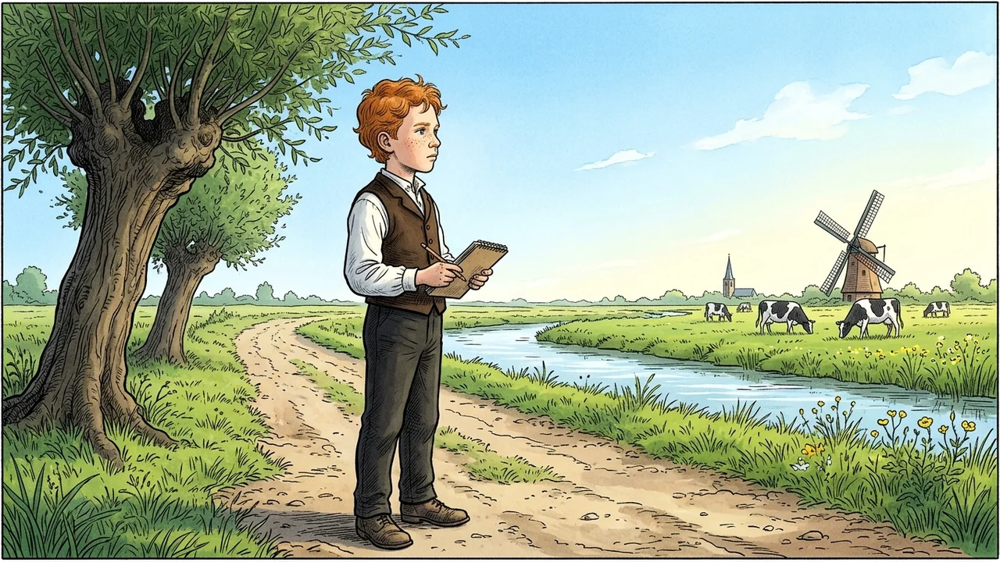
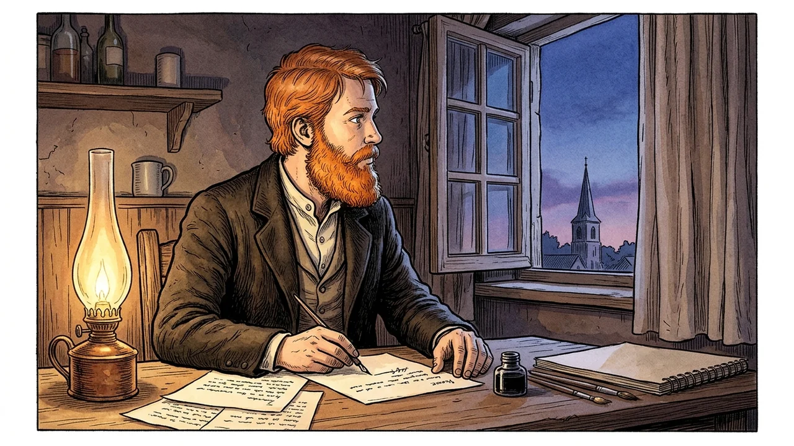
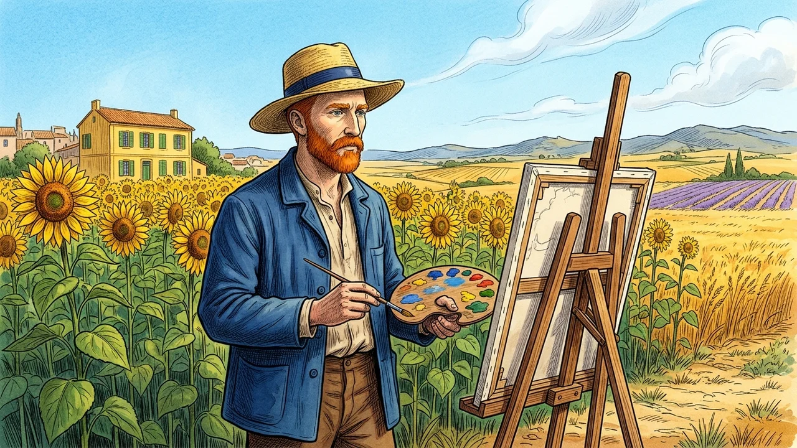
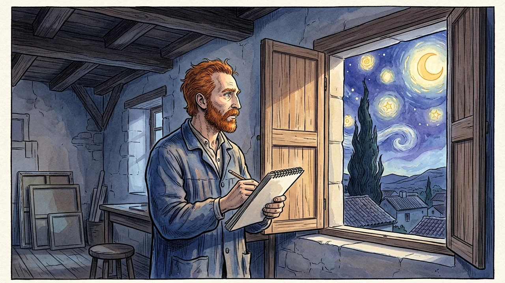
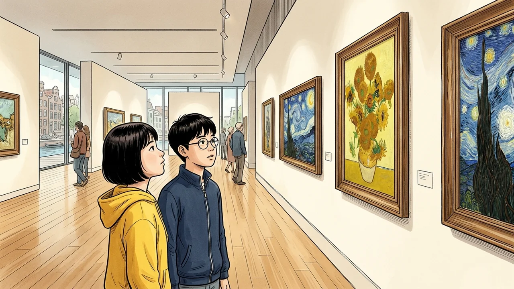

YEONLIFE MASTERPIECE ENGLISH · VOL. 01
Vincent van Gogh
빈센트 반 고흐 : 빛과 영혼을 그린 불멸의 화가

Chapter 1 · Zundert Green Fields (1853)
CHAPTER 1. 어린 시절과 자연의 평화
Vincent van Gogh was born in the Netherlands in 1853.
As a quiet boy, he loved walking through green fields.
Nature was his first and greatest teacher.
빈센트 반 고흐는 1853년 네덜란드에서 태어났습니다.
조용한 소년이었던 그는 초록빛 들판을 걷는 것을 무척 좋아했습니다.
자연은 그의 첫 번째이자 가장 위대한 선생님이었습니다.

Chapter 2 · Letters to Theo
CHAPTER 2. 화가의 결심과 테오의 편지
He decided to become a painter to comfort people's hearts.
His younger brother Theo believed in him and supported him with deep love.
They shared their dreams through hundreds of letters.
그는 사람들의 마음을 위로하기 위해 화가가 되기로 결심했습니다.
남동생 테오는 그를 굳게 믿고 깊은 사랑으로 묵묵히 지원해 주었습니다.
두 사람은 수백 통의 편지를 주고받으며 꿈을 함께 나누었습니다.

Chapter 3 · The Yellow House & Sunflowers in Arles (1888)
CHAPTER 3. 아를의 노란 집과 눈부신 해바라기
Vincent moved to Arles in the sunny south of France.
He painted bright yellow sunflowers with all his passion.
His famous paintings were created in a little yellow house.
빈센트는 햇살이 눈부신 프랑스 남부의 아를로 이주했습니다.
그는 자신의 모든 열정을 쏟아부어 찬란한 노란 해바라기를 그렸습니다.
그의 명작들은 바로 그 작은 '노란 집'에서 탄생했습니다.

Chapter 4 · The Starry Night in Saint-Rémy (1889)
CHAPTER 4. 생레미의 밤하늘과 별이 빛나는 밤
Even when he felt sick and lonely, he never stopped painting.
Looking out of his window at night, he saw swirling golden stars.
That was how 'The Starry Night' was born into this world.
마음이 아프고 외로웠을 때조차, 그는 그림 그리기를 결코 멈추지 않았습니다.
밤마다 창밖을 내다보며, 그는 소용돌이치는 황금빛 별들을 보았습니다.
그렇게 불멸의 걸작 '별이 빛나는 밤'이 세상에 태어났습니다.

Chapter 5 · Timeless Masterpieces in Museums
CHAPTER 5. 시대를 초월한 걸작과 전 세계인의 사랑
Van Gogh sold only one painting while he was alive.
However, his touching art now moves millions of people across the world.
His warm light continues to shine forever in our hearts.
반 고흐는 살아생전 단 한 점의 그림밖에 팔지 못했습니다.
하지만 그의 감동적인 예술은 이제 전 세계 수백만 사람들의 마음을 울리고 있습니다.
그의 따뜻한 빛은 우리 가슴속에서 영원히 반짝이고 있습니다.